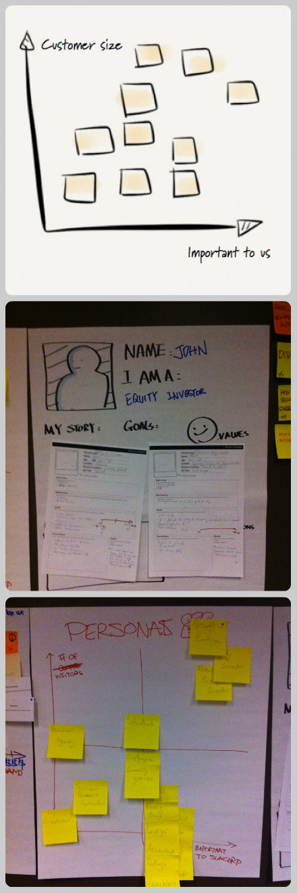

近日在客户组织内容策略（Content Strategy）的工作坊，目标是对现有集团网站的信息进行重新设计，客户是澳洲最大的金融机构之一，网站上各种信息冗杂和缺乏有效组织和管理，这个工作坊的目的是迭代式地将各种内容进行梳理和分类，增强内容的可访问性。这篇博文记录这个工作坊的设计思路和过程。
用户体验的五个层次
Jesse James Garrett把用户体验分成五个层次，内容消费和功能消费在这五个层次上有不同侧重的需要，内容消费在五个层次上侧重的是：策略-内容-信息架构-导航和信息设计-视觉。而这个工作坊的核心主线也是这个五个层次。
传统瀑布式UX的工作流程将这五个层次当成五个工作环节进行，完成策略之后转入内容梳理，再到信息架构，完成导航和信息设计后，最后进行视觉设计。
敏捷UX避免流程化分工化的设计过程，强调各个环节、各种角色和技能的融合，于是核心问题是：在每个层次上，我们是不是已经足够掌握最重要的信息进入下一个层次，如果是，不需要在一个层次上期待完成所有工作，尽可能快的完成一个横跨五个层次的最小可验证产品集合，第一时间进行用户测试。
五个层次分别解决什么?
策略层决定的是为谁做（Who）和为什么做（Why）的问题，即我们所提供的信息是为了谁进行消费，以及消费这些信息的驱动和目标是什么。
基于我们对某些类型消费者（Who）的了解，内容层决定的是我们应该提供什么信息（What）去完成他们的目标（Why），信息的组织尽可能由消费者的目标驱动，使得信息的消费过程尽可能自然（体验化）。
而接下来的三个层次：信息架构、导航和信息设计、视觉，解决的都是如何让信息更好地展示的问题（How）。三个层次分别在点、线、面上真正实现信息消费的目标──信息架构解决单点信息消费，导航和信息设计解决多点信息互动，视觉保证整体信息消费过程愉悦。
策略层─为谁做和为什么做？
在这个层次上我们需要理解信息到底为谁而准备，以及是什么驱动消费者消费信息，于是这个层次的目标是：典型信息消费者，核心的用户目标。
实践一：消费者坐标
我们邀请参与者对可能出现的潜在消费者进行头脑风暴，在一个坐标图上对潜在消费者进行分布，坐标图的两个轴分别是：潜在访问量和对商业的价值。我们自然优先考虑的是最右上角那些访问量较大（信息需求大）和对商业价值大（我更希望他们来）的用户，例如对一个金融机构主页来说，吸引投资者可能更优先于寻找工作。

通过消费者坐标是我们得到一个大致的优先级。选择其中的三个作为此次工作坊的目标，即如何满足这三个消费者的信息需求。
实践二：消费者建模
为了更好的理解我们选择的目标消费者，我们需要对消费者进行完整的建模，即Persona。越接近于真实的Persona帮助我们更好的理解其用户目标，关于Persona的建立可以参考之前的文章。
Persona的重要产出物是一系列用户目标，对于同一个Persona，用户目标可能有不同，有些目标是基础核心目标，有些则是衍生性的，例如一个访问网站潜在投资者的核心目标可能是了解成为投资者的过程，而衍生性目标可能是获得一些关于公司历史信息增加信任度。
我们需要一将每个典型消费者的用户目标罗列出来，按照“核心”和“衍生”进行区分。
内容层─提供什么信息？
当我们理解要吸引什么消费者，以及吸引消费者前来的用户目标是什么之后，我们需要理解对于这些用户的需求，我们应该提供什么样的信息？
实践三：内容坐标
大部分情况我们坐在已有内容的基础上对信息进行再造和组织，我们需要对现有信息进行一个归纳和梳理，了解什么是我们最有价值的信息？
建立一个坐标，横轴是“完成这个用户任务对业务很重要”，纵轴是“完成这个用户任务对消费者很重要”，将之前梳理的用户任务在这个坐标轴上进行分布，这个实践的核心在于比较每个用户任务在商业价值和消费者价值的综合评价，右上角的用户目标自然是体现最高用户和商业价值的用户目标，因为这些目标又来自于我们梳理出来最高优先级的典型用户，这些目标就是我们认为最应该优先解决的。
接下来，我们从现有网站的网站地图上将所有节点标题打印成小纸条，尝试让客户将纸条贴在每个用户任务卡的周围，最后我们就得到一个体现最高优先级用户任务和对应信息需求的地图，我们的关注点便被聚焦在这一小部分信息上。
信息架构层─怎么展现信息？
到这一步我们已经开始思考如何展示信息，而和传统方式不同的地方是我们已经将工作缩小到一个很小的范围内──专注于最重要的用户、最重要的用户目标、和达成这些用户目标最重要的内容。这时候我们就可以从一个最重要的用户目标出发，构筑信息架构。
实践四：纸上原型
纸上原型（Paper Prototyping）是我们常用的信息架构方法，使用最粗糙和原始的方式鼓励人们进行沟通和互动，尽可能晚的使用工具。我们使用贴纸画出信息大概的样子在一张海报纸上进行自由组合，只需一个页面需要什么样的信息，那些是关键信息，并不需要知道信息展现的具体细节。下图展示的是各种纸上原型的例子：
导航和信息设计层─怎么和信息进行交互？
当我们把一个用户目标需要的信息点都梳理出来，我们要做的是设计各个信息点之间是如何进行流动和交互的，前者体现在页面的导航设计、后者体现在单个页面中的信息设计。我们的下一步是建立对一个关键用户目标（或多个）的导航及信息设计。
实践五：草图设计
最简单的草图设计可以在白板上进行，将关键页面中的贴纸转化成信息设计，比如说贴纸内容是“ Dividends History”，你则需要把这个用列表、表格、或者图表的形式表现出来，完整每一个关键页面之后，这样你就应该有一个完整的页面模板画布。
接下来，只需要想办法将这样页面模板关联起来，形成一个信息流，注意，信息流的梳理应该从用户目标出发，即如果需要完整该用户目标则要完成哪些页面，消费哪些信息，最后就可以形成一个完整的页面流图。

为了使未来沟通更高效，我们会将草图转化为稍微规范化一点的Balsamiq原型工具（注意，到这里我们才真正使用了工具，其他时候都只是使用纸笔和白板），Balsamiq制作的原型图会被打印并张贴出来，为下一次的工作坊做准备（讨论更多用户目标）。
在下一次的工作坊开始时，我们会邀请客户体验完整的原型线框图，按照用户目标，检测用户是否能够很好的完成这些用户目标。
视觉表达层─怎么使信息消费更愉快？
视觉在传统流程中往往最晚介入，在敏捷UX中，我们一直将设计师加入在整个的设计过程中，在这个阶段视觉设计师已经可以为设计好的线框原型加上皮肤了。越真实的原型可以更加真实地获得用户的反馈，在一个极端情况下，请制作一个很好集合视觉设计的可工作原型（HTML+CSS+JS）。但是考虑到这是一个以内容消费为主的网站，简单的页面设计就已经足够了。
迭代演进
到现在，我们的设计只关注几种最核心用户，只关注其最核心的几种用户目标，只提供辅助用户完成这几种用户目标的信息，同时，它又是从策略到视觉端到端的最小可验证产品设计。
在进入下一个迭代时，我们将使用这个作为基础，拿剩下的用户目标在其上进行测试，尝试在现有原型上，新的用户目标是不是能完成，这就是一个完整原型的好处，我们可以很真实地模拟用户场景，记录下用户在哪里停止，需要如何改进。
当我们发现有些地方无法满足新的需求，我们便可以重新使用上述的方法对原型产品进行演进，直到一个设计迭代结束。
何时进入开发
当我们觉得当前设计已经足够有信心进入开发时（通常是覆盖三到四个核心用户的需求），我们便可以进入开发阶段，同时设计迭代并没有停止，继续将设计进行迭代演进，这就是敏捷UX和敏捷开发的结合。
几点建议
- 尽量缩短每个设计迭代的时间，并保证每个迭代的产物是一个完成满足一个信息消费目标的体验；
- 尽量可能晚的进入使用软件阶段，尽可能使用草图、贴纸、白板等工具；
- 尽量可能让所有角色参与到设计过程中来；
- 尽量可能使所有过程体现优先级，即核心用户核心体验优先
- 尽量可能将产出物展示并透明化
此上就是一个用Agile UX指导的内容策略工作坊的过程。